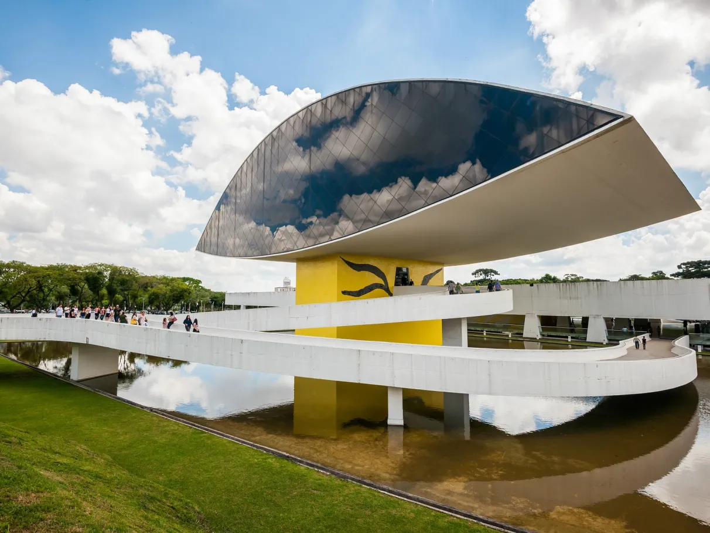
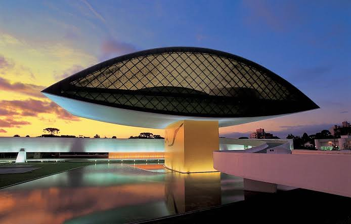

O que é o Museu Oscar Niemeyer?
O Museu Oscar Niemeyer, conhecido popularmente como Museu do Olho, é um dos principais museus de arte da América Latina e um dos maiores espaços expositivos do Brasil. Localizado em Curitiba, foi projetado pelo arquiteto Oscar Niemeyer e inaugurado em 2002, sendo ampliado em 2003 com a construção do edifício em formato de olho, que se tornou seu símbolo. O museu reúne exposições de artes visuais, arquitetura, design e fotografia, além de promover atividades culturais e educativas. Seu acervo conta com milhares de obras de artistas brasileiros e internacionais, tornando-o um importante centro de preservação, produção e divulgação da arte e da cultura.

Contexto histórico
O Museu Oscar Niemeyer foi criado no início dos anos 2000, em um período em que Curitiba buscava fortalecer sua posição como referência nacional em cultura, urbanismo e arquitetura. O museu foi inaugurado em 2002 em um edifício que havia sido projetado por Oscar Niemeyer na década de 1960 para sediar um instituto de educação. Em 2003, o complexo foi ampliado com a construção do famoso anexo em formato de olho, que rapidamente se tornou um dos principais símbolos arquitetônicos da cidade. A criação do museu teve como objetivo valorizar a produção artística brasileira e internacional, além de homenagear Oscar Niemeyer, um dos mais importantes arquitetos do século XX. Desde então, o espaço consolidou-se como um importante centro cultural, recebendo exposições, eventos e atividades educativas que contribuem para a preservação e difusão da arte, da arquitetura e do design.
Importância cultural
O Museu Oscar Niemeyer possui grande importância cultural por ser um dos principais centros de arte e patrimônio cultural do Brasil. Além de preservar e expor um vasto acervo de obras de arte, arquitetura, design e fotografia, o museu promove exposições nacionais e internacionais que ampliam o acesso da população à cultura e incentivam o diálogo entre diferentes formas de expressão artística. Também desenvolve programas educativos, palestras, oficinas e atividades voltadas para estudantes, pesquisadores e visitantes de todas as idades, contribuindo para a formação cultural e o incentivo ao pensamento crítico. Sua arquitetura, projetada por Oscar Niemeyer, é reconhecida mundialmente e faz do museu um importante símbolo da identidade cultural de Curitiba e da arquitetura brasileira, atraindo turistas, pesquisadores e amantes da arte de diversas partes do mundo.

Curiosidades
Curiosidade 1
O “Olho” não é o prédio original. O famoso volume em formato de olho foi construído 35 anos depois do edifício principal. O primeiro prédio foi projetado por Oscar Niemeyer em 1967, originalmente para abrigar o Instituto de Educação do Paraná. As obras terminaram na década de 1970, mas o instituto nunca funcionou ali.
Curiosidade 2
Niemeyer tinha 93 anos quando projetou o “Olho”. Quando o projeto do museu foi desenvolvido no início dos anos 2000, Oscar Niemeyer já tinha 93 anos. O anexo foi sua solução para transformar o conjunto existente em um museu — e acabou criando o elemento arquitetônico que se tornou símbolo do MON.
Curiosidade 3
O vão livre é gigantesco. O projeto previa inicialmente um vão de 100 metros, mas o que foi construído tem cerca de 65 metros. Quando o edifício foi inaugurado, em 1978, isso o colocava entre os maiores vãos livres do Brasil.